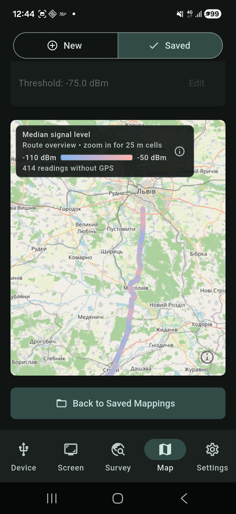

1. Plan a repeatable route
Pick a target frequency and a route you can cover safely. Keep the antenna orientation, height, and signal path as consistent as practical. Route maps can change with reflections, obstructions, and antenna handling; a bright cell alone does not locate a transmitter.
Connect the analyzer in Device, then open Map → New. Enter a mapping name, Target frequency, and Capture span. The target must lie within the captured range. Choose RBW and supported attenuation or LNA settings, and add setup notes if you expect to compare routes.
2. Watch GPS quality while collecting
Tap Start Mapping. The app allows collection even when GPS quality is low. By default, a fix must have accuracy no worse than 25 m and be no older than 10 s to be associated with a sample. Other sweeps are saved without a location, so the total sample count can exceed the number shown on the map.
Give the phone a clear view of the sky where possible and watch the live GPS status. If location quality degrades, you can continue collecting, pause, or finish; an unlocated sample is not silently turned into a map point. The analyzer also samples each frequency in sequence, so distance between mapped readings depends on sweep and save time as well as your speed.
3. Read the saved map
Tap Finish Mapping, then open the project from Map → Saved. Use Sweep point to map to select a recorded frequency. The map groups located samples into 25 m cells. Its default color represents median received level at that sweep point; an optional layer shows the percentage of samples at or above a chosen dBm threshold.
Check the project's located and unlocated counts before drawing conclusions. A cell may represent only a few samples, and a gap may mean the phone lacked a qualifying location fix. Compare routes only when frequency, analyzer settings, antenna setup, and measurement conditions are comparable.
Interpretation limit: these are sampled power levels at the analyzer input, not a continuous RF recording or a calibrated estimate of transmitter position. The threshold layer is an analysis of recorded samples, not a compliance result.

Get RF Survey Companion on Google Play to record and inspect a route with a compatible tinySA.